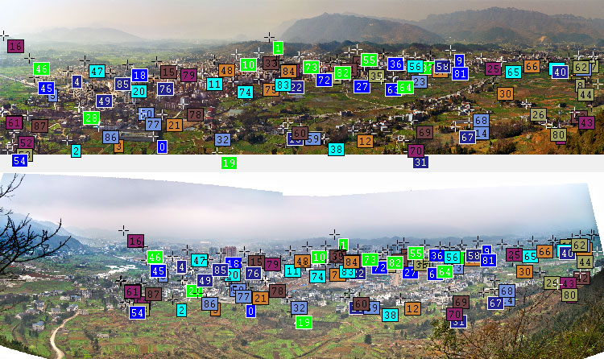

4 Years of Suiyang
I had the opportunity to take two panoramas of Suiyang in February 2009 and February 2013.
They were taken from the same location so I could stack them perfectly (read below for the details of the stacking process).
It shows how fast a typical country in China develops. Drag the slider to compare.
1. The overall picture. The horizontal field of view is about 100°.
2. A highway has been built in the background.
3. Residential area has been renovated.
4. Down town area.
5. Farms are gone. City grows.
6. The mountain is probably the only thing that stands for another decade.
7. More houses. See the trees/bamboos grow?
8. Haze. I have to be honest that, the sample size of two can't lead to any conclusion.
The Stacking Process
I used Hugin to manually add control points, which specify the same objects in both images.
The automatic control points generation doesn't work because the two images are quite different.

After adding control points, Hugin fails to align them because they are panoramas which have complex distortions than a lens.
Hugin only works with lens distortion.
After searching and trying other software, including asking in stackexchange, I ended up developing my own solution.
The goal is to find a model which translates a point (x1, y1) in Image 1 to a point (x2, y2) in Image 2.
In other words, x2=f(x1, y1) and y2=f(x1, y1).
The affine transformation is a special case of it where x2=a+b*x1+c*y1 and y2=d+e*x1+f*y1.
Affine transformation doesn't work well here, but higher order transformation might work.
I ended up using the third order, i.e.
x2 = a + b*x1 + c*y1 +
d*x1*x1 +
e*x1*y1 +
f*y1*y1 +
g*x1*x1*x1 +
h*x1*x1*y1 +
i*x1*y1*y1 +
j*y1*y1*y1.
Given the control points, I used least square fitting using GNU Octave to find the coefficients.
Solving the whole panorama using a single model doesn't work well because the distortion is too complex for the third order transformation.
If I use higher order, the numerical error comes into play.
I ended up cutting the panorama into three parts (left, middle and right) and solving them independently.
It works surprisingly well, and the three parts are well connected because I have a few overlapping control points between two adjacent parts.
After finding out the coefficients, I wrote a simple C program to do the image transformation.
To give an idea how the third order transformation looks like, this is the one for the middle part.
x2 = 1.9898e+03 + 1.3420e+00*x1 + -6.8559e-02*y1 + -1.8703e-05*x1*x1 + -5.0530e-06*x1*y1 + 5.9110e-05*y1*y1 + 1.5748e-09*x1*x1*x1 + 6.0810e-09*x1*x1*y1 + -9.6947e-09*x1*y1*y1 + -8.2613e-09*y1*y1*y1
y2 = 5.9421e+02 + -3.2313e-03*x1 + 1.1095e+00*y1 + 8.1613e-06*x1*x1 + 2.3740e-05*x1*y1 + 2.4393e-05*y1*y1 + -1.6736e-09*x1*x1*x1 + -8.6399e-09*x1*x1*y1 + 2.0527e-08*x1*y1*y1 + -5.3927e-08*y1*y1*y1;
Credits
Photo stitching: Hugin
Adding control points: Hugin
Solving the transformation: GNU Octave
Applying the transformation: My morph.c
The slider control in this webpage: jQuery Before/After Plugin
You can leave your comments here.
Last updated: see here